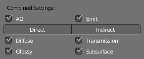
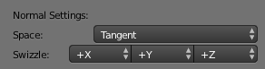

Render Baking¶
Reference
| Panel: |
|---|
Refer to the Blender Render page for general baking guidelines.
Cycles uses the render settings (samples, bounces, ...) for baking. This way the quality of the baked textures should match the result you get from the rendered scene.
The baking happens into the respective active textures of the object materials. The active texture is the last selected Image Texture node of the material node tree. That means the active object (or the selected objects, when not baking 'Selected to Active') needs a material, and that material needs at least an Image Texture node, with the image to be used for the baking. Note, the node does not need to be connected to any other node. The active texture is what projection painting and the viewport use as a criteria to which image to use. This way after the baking is done you can automatically preview the baked result in the Texture mode.
Options¶

Ambient Occlusion Pass.
Bake Mode¶
- Combined
Bakes all materials, textures, and lighting except specularity.
Combined Pass options.
The passes that contribute to the combined pass can be toggled individually to form the final map.
- Ambient Occlusion
- Bakes ambient occlusion as specified in the World panels. Ignores all lights in the scene.
- Shadow
- Bakes shadows and lighting.
- Normals
Bakes normals to an RGB image.
Normal Pass options.
- Normal Space
Normals can be baked in different spaces:
- Object space
- Normals in object coordinates, independent of object transformation, but dependent on deformation.
- Tangent space
- Normals in tangent space coordinates, independent of object transformation and deformation. This is the default, and the right choice in most cases, since then the normal map can be used for animated objects too.
- Normal Swizzle
- Axis to bake into the red, green and blue channel.
For materials the same spaces can be chosen in the image texture options next to the existing Normal Map setting. For correct results, the setting here should match the setting used for baking.
- UV
- Bakes colors of materials and textures only, without shading.
- Emit
- Bakes Emission, or the Glow color of a material.
- Environment
- Bakes the environment as seen from the center of the object.
- Diffuse, Glossy, Transmission, Subsurface
Bakes the diffuse, glossiness, transmission of subsurface pass of a material.

Diffuse Pass options.
- If only color is selected you get the pass color, which is a property of the surface and independent of sampling refinement.
- If color is not selected, you get the direct and/or indirect contributions in gray-scale.
- If color and either direct or indirect are selected, you get the direct and/or indirect contributions colored.
Additional Options¶
- Margin
- Baked result is extended this many pixels beyond the border of each UV "island", to soften seams in the texture.
- Clear
- If selected, clears the image before baking render.
- Select to Active
- Bake shading on the surface of selected objects to the active object. The rays are cast from the low-poly object inwards towards the high-poly object. If the high-poly object is not entirely involved by the low-poly object, you can tweak the rays start point with Ray Distance or Cage Extrusion (depending on whether or not you are using cage). For even more control you can use a Cage Object.
Ghi chú
Memory Usage
There is a CPU fixed memory footprint for every object used to bake from. In order to avoid crashes due to lack of memory, the high-poly objects can be joined before the baking process. The render tiles parameter also influence the memory usage, so the bigger the tile the less overhead you have, but the more memory it will take during baking (either in GPU or CPU).
- Cage
- Cast rays to active object from a cage. A cage is a ballooned-out version of the low-poly mesh created either automatically (by adjusting the ray distance) or manually (by specifying an object to use). When not using a cage the rays will conform to the mesh normals. This produces glitches on the edges, but it is a preferable method when baking into planes to avoid the need of adding extra loops around the edges.
- Ray Distance
- Distance to use for the inward ray cast when using selected to active. Ray distance is only available when not using Cage.
- Cage Extrusion
- Distance to use for the inward ray cast when using Selected to Active and Cage. The inward rays are casted from a version of the active object with disabled Edge Split Modifiers. Hard splits (e.g. when the Edge Split Modifier is applied) should be avoided because they will lead to non-smooth normals around the edges.
- Cage
Object to use as cage instead of calculating the cage from the active object with the Cage Extrusion.
Ghi chú
When the base mesh extruded does not give good results, you can create a copy of the base mesh and modify it to use as a Cage. Both meshes need to have the same topology (number of faces and face order).